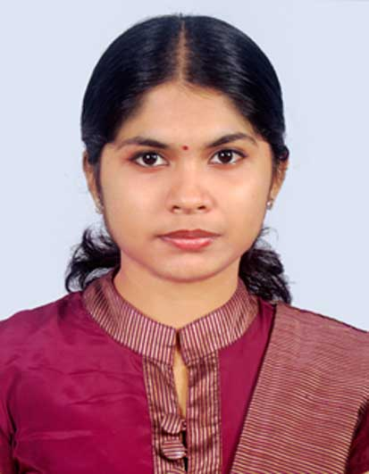

Software Engineering Lab, IIIT-B
- Home
- People
- Varsha P. Suresh
Varsha P. Suresh

Degree Registered For: PhD
Supervisor : Sujit Kumar Chakrabarti
Date of Joining : January 2017
Research Interest : Formal specification and automated testing of Embedded Software.
Biographical Sketch
Prior to joining IIIT Bangalore,Varsha completed her Mtech in Com-
puter Science and Systems Engineering(2014-2016) and BTech in Com-
puter Science and Engineering(2010-2014) from Government Engineer-
ing College Idukki, Mahatma Gandhi University, Kerala.
Currently she is also working with
ABB, Bangalore as part of her
research work.
Her other interests are Dance, Music, Drawing etc.
Courses taken till now: Compiler Design, Software Testing, Theory of
Computation, Programming Languages, Formal verification of SOCs.
Recent Publications